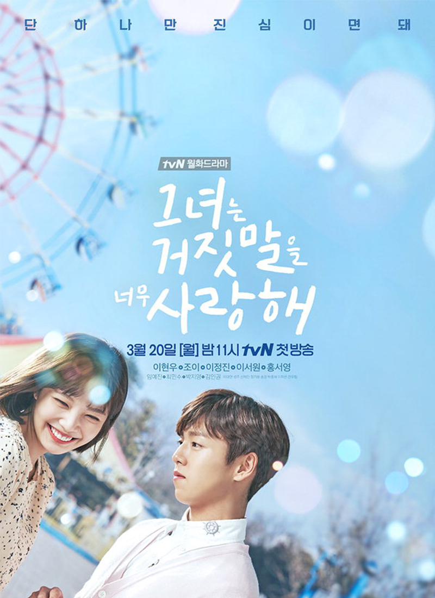
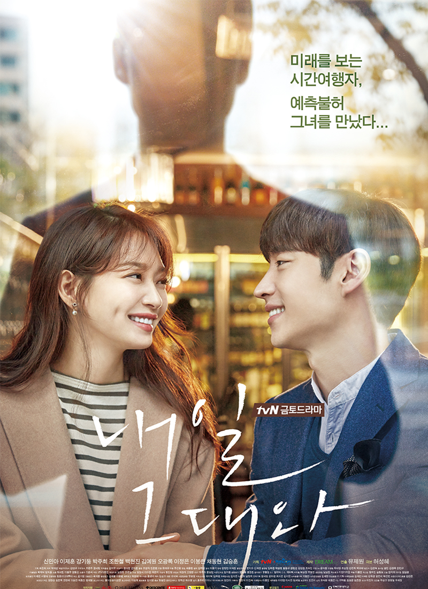
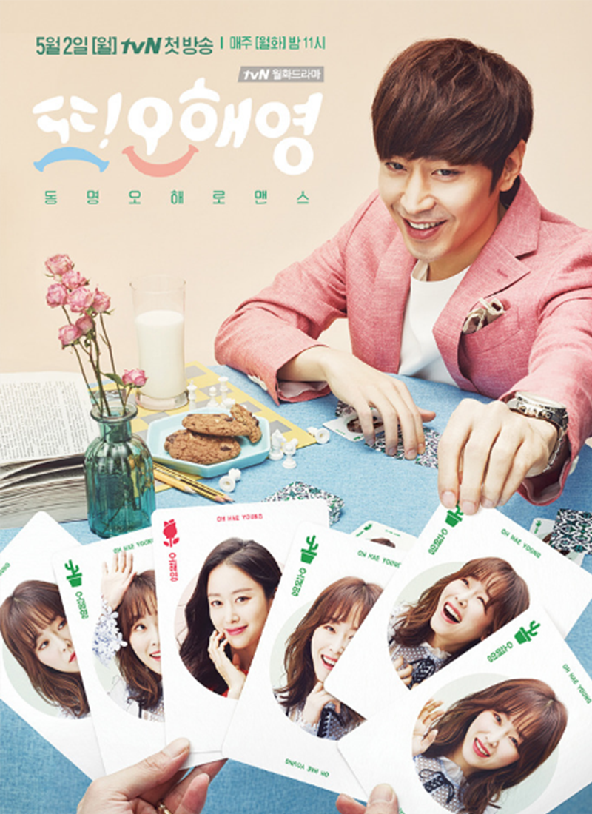
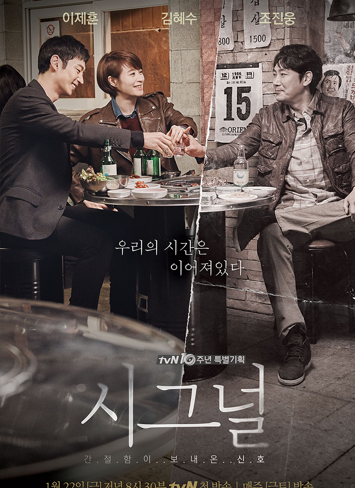
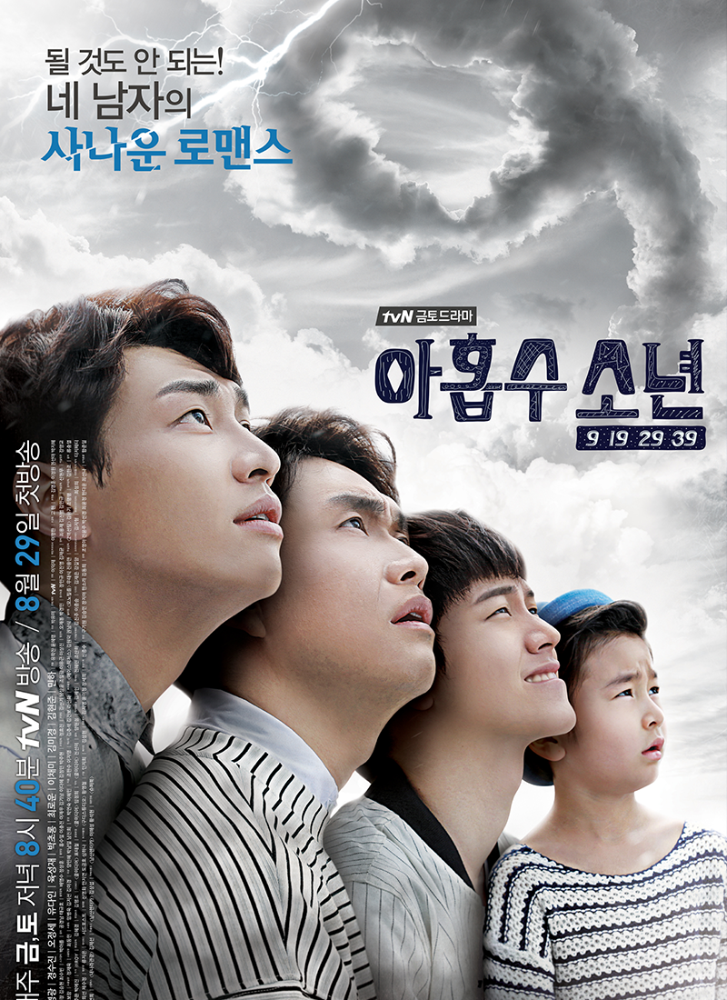
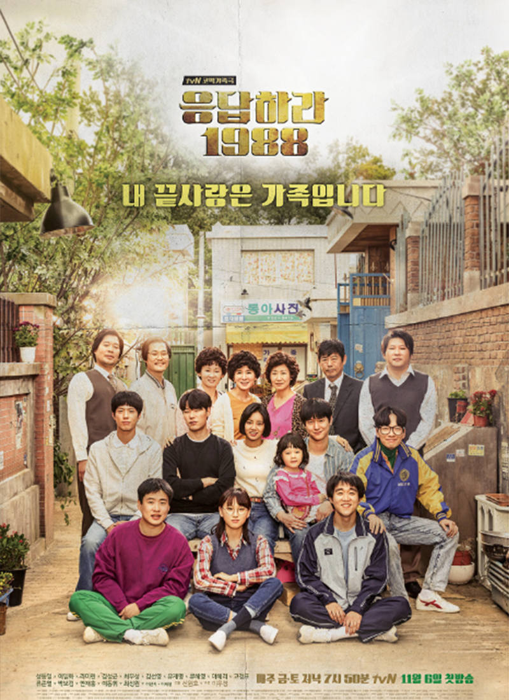
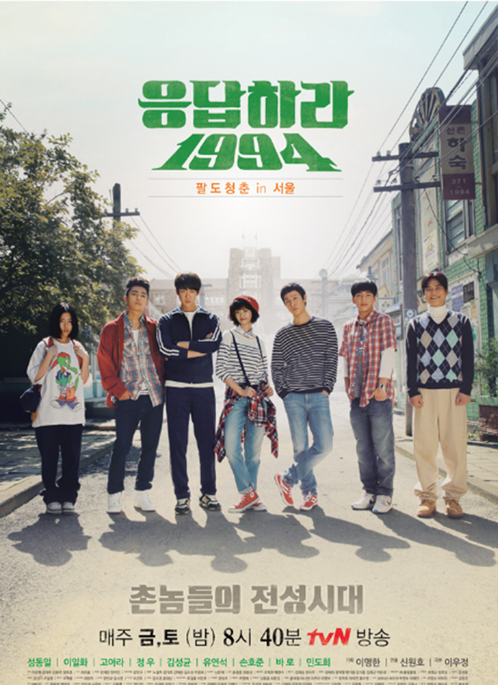
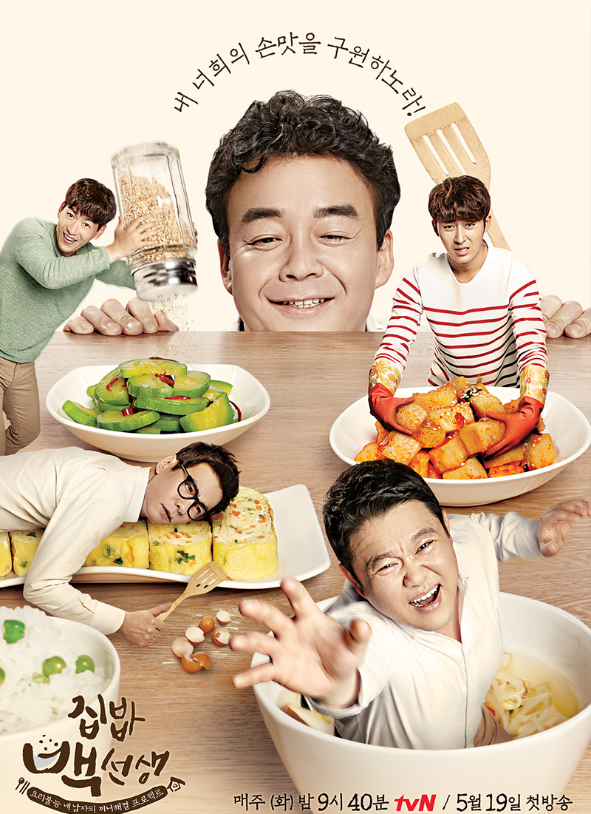

Content trend leader TVN |
||
|---|---|---|

|
tvN은 2006년 10월 09일 개국 이래, 대한민국은 물론 미국 및 아시아에서 방영되고 있는 대한민국 최고의 종합 엔터테인먼트 채널입니다. 늘 참신한 발상으로 재미있고 유쾌한 오리지널 콘텐츠를 기획하며, 전 연령대 시청자들로부터 깊은 공감과 열광적인 사랑을 받고 있습니다. 두려워하지 않는 모험심을 바탕으로 "세상에 없던 즐거움"을
끝 없이 추구합니다. 좌측 그래프는 인기 케이블채널 3사의 요일별 최대 시청율을 표시한 것입니다. 케이블 채널중 시청률 1위를 기록하고 있습니다. |
|
| 자료 : TVN | ||










방 명 록 |
| 작성자 | |
| 내 용 | |